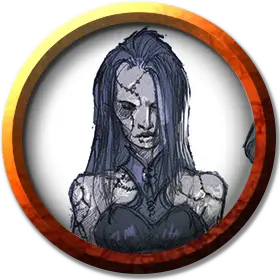

Василика
Vasilka
Средний Конструкт, нейтральный, именной НИП

Класс Доспеха 9
Хиты 93 (11к8 + 44)
Скорость 30 футов
| мод | спас | ||
|---|---|---|---|
| СИЛ | 19 | +4 | +4 |
| ЛОВ | 9 | −1 | −1 |
| ТЕЛ | 18 | +4 | +4 |
| мод | спас | ||
|---|---|---|---|
| ИНТ | 6 | −2 | −2 |
| МДР | 10 | +0 | +0 |
| ХАР | 5 | −3 | −3 |
Иммунитет к урону электричество, яд; дробящий, колющий, рубящий от немагических атак, кроме нанесённых адамантиновым оружием
Иммунитет к состояниям паралич, очарование, отравление, окаменение, истощение, испуг
Чувства тёмное зрение 60 футов, пассивное Восприятие 10
Языки Все
Опасность 5 (1800 опыта)
Бонус мастерства +3
Особенности
Языки. Понимает языки своего создателя, но не говорит.
Берсерк. Каждый раз, когда Василика начинает ход с 40 или меньше хитами, бросайте к6. Если выпадет «6», Василика становится берсерком. Будучи берсерком, она в каждом своем ходу атакует ближайшее видимое существо. Если поблизости нет существ, к которым можно подойти и атаковать, Василика атакует предмет, предпочитая предметы с размером меньше своего. Став берсерком, Василика остается им, пока её не уничтожат или пока она не восстановит все свои хиты.
Создатель Василики, находящийся в пределах 60 футов от ставшей берсерком Василики, может попытаться успокоить её, отдавая четкие команды убедительным голосом. Василика должна слышать создателя, который действием совершает проверку Харизмы (Убеждение) Сл 15. При успехе Василика перестает быть берсерком. Если Василика получает урон, когда у неё 40 или меньше хитов, она может снова стать берсерком.
Боязнь огня. Если Василика получает урон огнём, она до конца своего следующего хода совершает с помехой броски атаки и проверки характеристик.
Неизменяемая форма. Василика обладает иммунитетом ко всем заклинаниям и эффектам, изменяющим её форму.
Поглощение электричества. Каждый раз, когда Василика должна получить урон электричеством, он не получает урон, и вместо этого восстанавливает число хитов, равное причиняемому урону электричеством.
Сопротивление магии. Василика совершает с преимуществом спасброски от заклинаний и прочих магических эффектов.
Магическое оружие. Атаки оружием Василики являются магическими.
Действия
Мультиатака. Василика совершает два размашистых удара.
Размашистый удар. Рукопашная атака оружием: +7 к попаданию, досягаемость 5 футов, одна цель. Попадание: 13 (2к8 + 4) дробящего урона.
Описание
Персонажи в 5 футах от Василики могут увидеть швы на ее напудренной коже, в местах, где различные части тела, украденные из могил в Крезке, были аккуратно сшиты вместе.
Аббат обучает Василику нюансам этикета. Он также собирается научить ее танцевать. Василика абсолютно послушна Аббату. Она не может говорить, но от боли будет кричать нечеловеческим голосом.
Если она впадет в ярость, то будет драться до смерти, или пока Аббат не восстановит контроль над ней.
Несмотря на маленький размер, она обладает сверхъестественной силой голема плоти. Аббат не собирается причинять вред персонажам. Он знает, что Страд не просто так перенес их в Баровию, и не хочет препятствовать планам Страда.
Его спокойная, приятная манера поведения быстро изменится, если персонажи поведут себя враждебно, или возникнет угроза для Василики. Он сбросит свою маскировку и предстанет в своей истинной ангельской форме, в надежде, что этого будет достаточно, чтобы убедить персонажей остановится.
Аббат хочет найти для Василики подходящее свадебное платье. Если персонажи ведут себя дружелюбно, он попросит их о помощи в поисках. В обмен он предложит магическую поддержку – три раза использовать для них заклинание оживление [raise dead], или одарить их своим целебным прикосновением.
Если они откажут в помощи, или будут грубо себя вести, он прикажет немедленно покинуть аббатство. И если персонажи откажутся, Аббат нападет на них, но будет делать все, для спасения Василики.